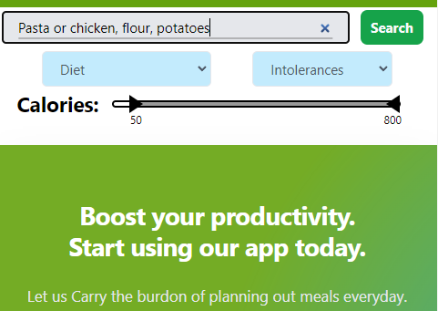
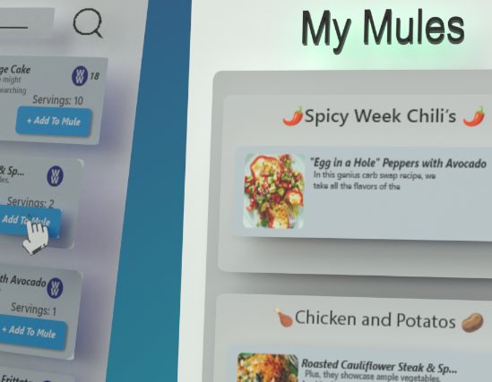

Popular Mule Meals
Getting Started
Step

First Thing When you Reach our site you are going to want to create a Mule within the My Mules Page in order to have somewhere to save your meals.
Step

Now You can Search for meals (w/ a comma seperated list of ingredients(chicken, flour, potatos) or a common meal name( pasta, chicken, salad)) in the search bar found on either the home page or the Recipe Page.
Step

Once You have found A meal You like You can click the '+ Add To Mule' Button and then select which Mule You'd Like to add the Recipe to.